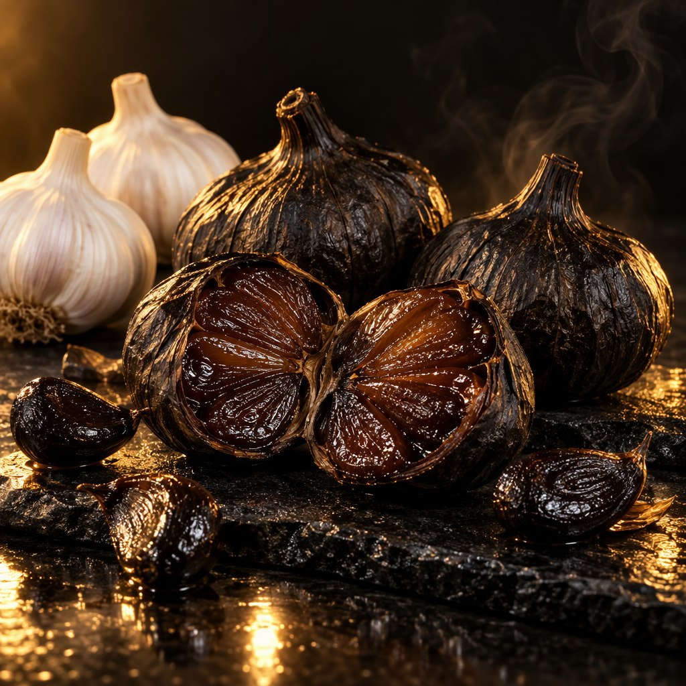
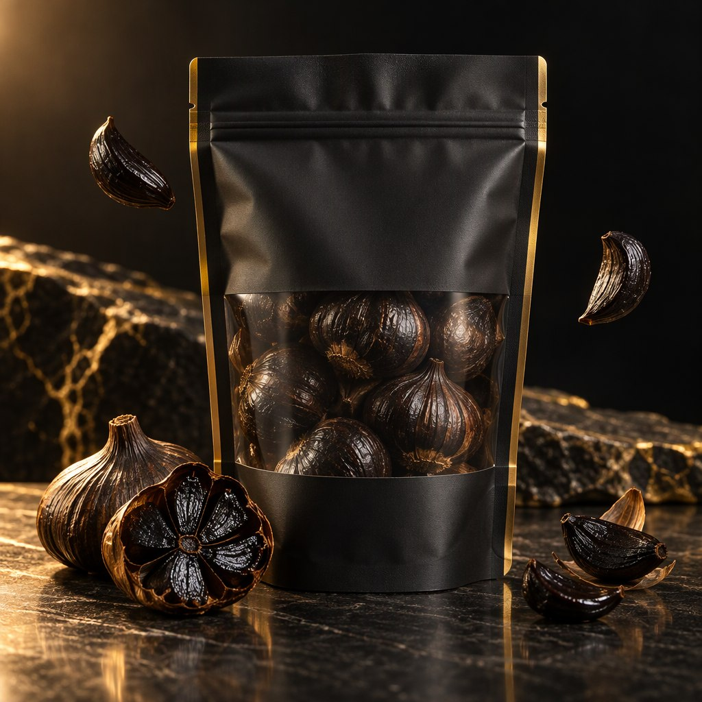
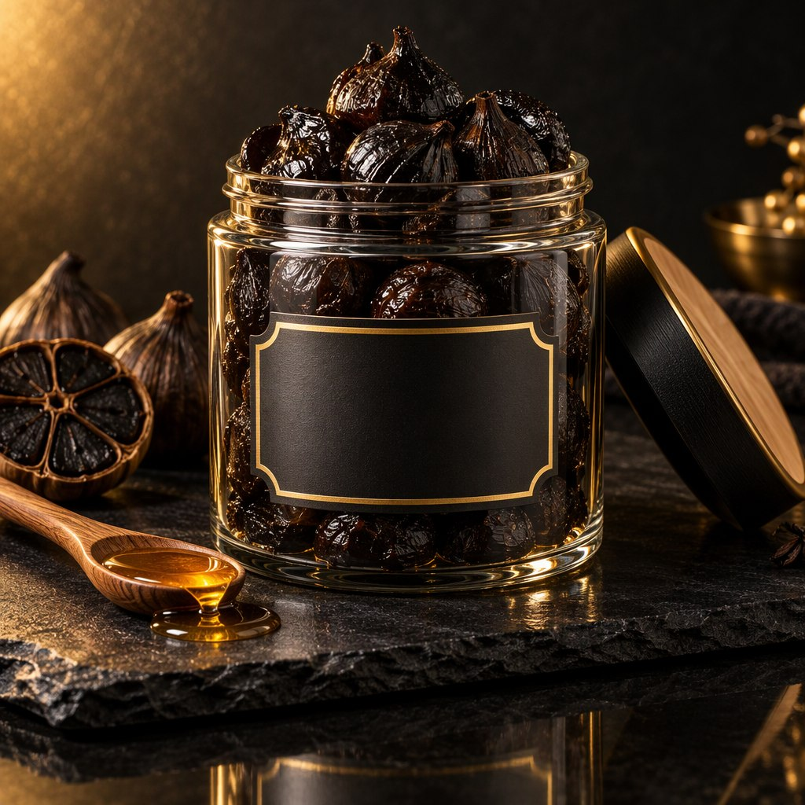
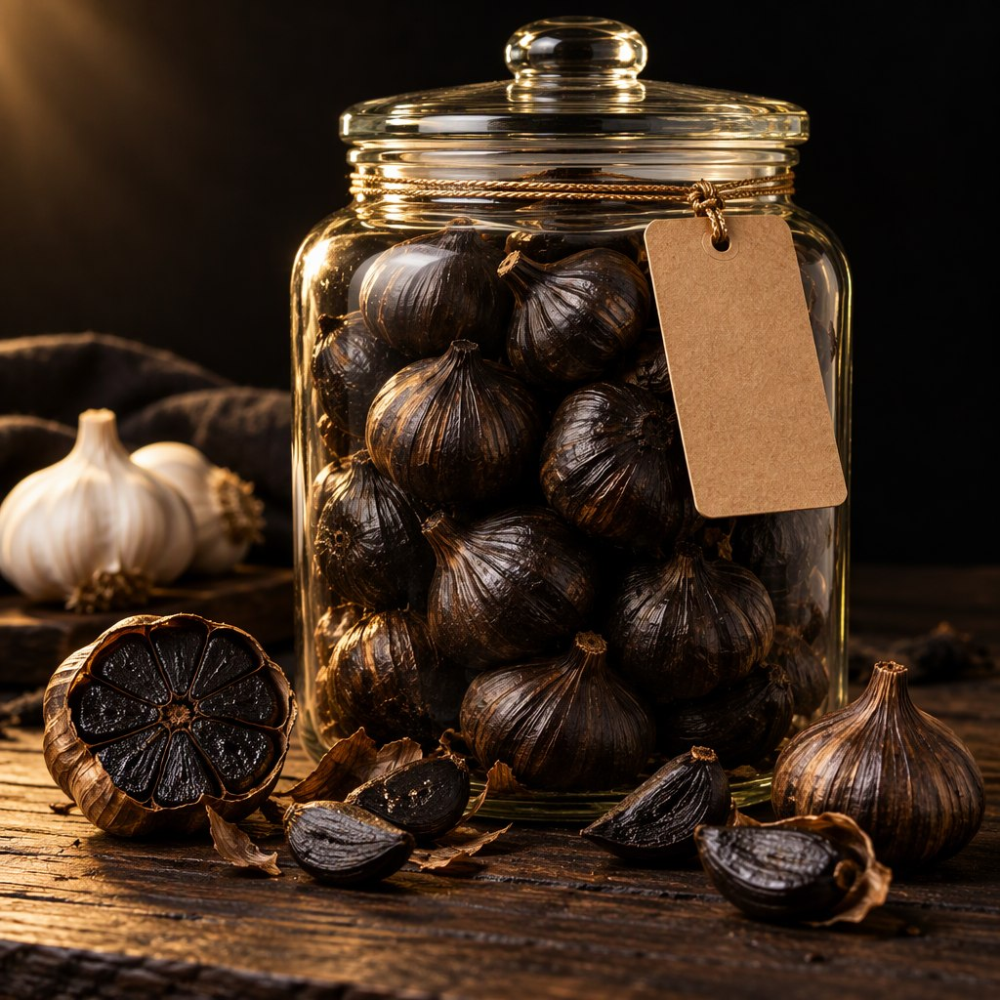
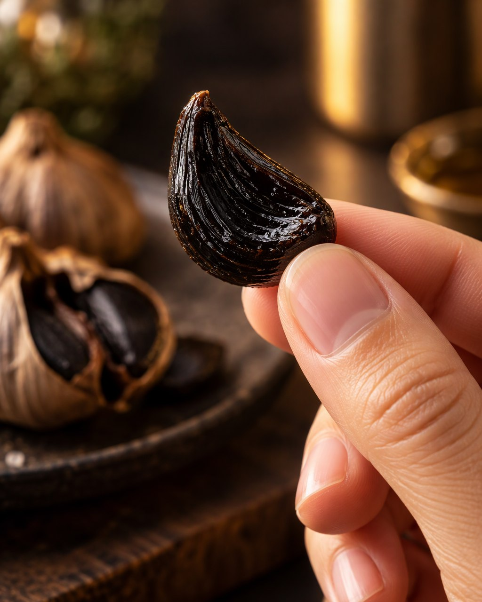

Jantung Lebih Sehat
Membantu menjaga kolesterol dan tekanan darah tetap stabil, sebagai bagian dari pola hidup sehat.
Hasil dapat berbeda pada tiap orang. Tetap konsultasi ke dokter untuk kondisi medis.
Bawang Hitam Premium · Fermentasi Alami
Bawang Hitam Fermentasi 30 Hari. Manis, Lembut, Tanpa Bau Menyengat. Untuk Jantung, Stamina & Daya Tahan Tubuh.
Pesan langsung: +62 821-2599-1599Setiap hari 08.00–21.00 WIB

Manfaat
Satu siung setiap hari, sebagai pendamping pola makan sehat dan gaya hidup aktif Anda.
Membantu menjaga kolesterol dan tekanan darah tetap stabil, sebagai bagian dari pola hidup sehat.
Hasil dapat berbeda pada tiap orang. Tetap konsultasi ke dokter untuk kondisi medis.
Cocok untuk pekerja keras, lansia, dan masa pemulihan setelah sakit agar aktivitas terasa lebih ringan.
Hasil dapat berbeda pada tiap orang. Tetap konsultasi ke dokter untuk kondisi medis.
Kaya antioksidan hasil fermentasi, hingga 2× lebih tinggi dibanding bawang putih biasa.
Hasil dapat berbeda pada tiap orang. Tetap konsultasi ke dokter untuk kondisi medis.
Rendah gula dan aman dikonsumsi harian — bukan obat, tapi pendamping pola hidup sehat.
Hasil dapat berbeda pada tiap orang. Tetap konsultasi ke dokter untuk kondisi medis.
Produk
Harga jelas, kemasan premium, dan bisa COD area Bandung. Pesan langsung melalui WhatsApp.

Ukuran 100 Gram
Untuk coba-coba 2 minggu. Kemasan ziplock premium yang praktis dan rapat.
Order langsung: +62 821-2599-1599

Ukuran 250 Gram
Untuk konsumsi 1 bulan. Jar premium + gratis sendok madu.
Order langsung: +62 821-2599-1599

Ukuran 500 Gram
Untuk 2 bulan atau sekeluarga. Jar premium + gratis ongkir Bandung.
Order langsung: +62 821-2599-1599
Garansi uang kembali jika produk berjamur saat tiba. Bayar transfer bank atau COD Bandung.

Cara Konsumsi
Sederhana, tanpa perlu diolah. Nikmati manis legitnya seperti camilan sehat.
Cukup 1–2 siung. Tidak perlu banyak — yang penting rutin.
Kunyah di pagi hari sebelum makan, atau campurkan dengan madu bila suka lebih manis.
Tahan hingga 6 bulan di kulkas. Jauhkan dari sinar matahari langsung.
Tips: jadikan bagian dari sarapan pagi Anda. Bukan obat — bila sedang menjalani pengobatan, konsultasikan dulu dengan dokter.
Testimoni
Pengalaman pribadi mereka yang menjadikan black garlic bagian dari rutinitas sehat.
Rina Kusmawati
“Setelah rutin makan satu siung tiap pagi, badan saya terasa lebih enteng. Rasanya manis seperti kurma, jadi tidak perlu dipaksa-paksa.”
Dedi Supriatna
“Saya suka berkebun. Dulu gampang capek, sekarang tenaga terasa lebih tahan. Buat saya ini pendamping pola makan sehat.”
Sari Wulandari
“Tidur saya lebih nyenyak dan pagi terasa lebih segar. Teksturnya lembut, tidak bau, dan enak dikunyah langsung.”
Agus Setiawan
“Saat masa pemulihan setelah sakit, saya cari asupan bergizi. Black garlic ini membantu nafsu makan saya kembali — tentu tetap konsultasi dengan dokter.”
Yanti Herlina
“Awalnya ragu karena takut bau. Ternyata tidak! Manis dan lembut, bahkan cucu saya penasaran. Sekarang jadi camilan sehat kami.”
Hendra Gunawan
“Saya kombinasikan dengan jalan pagi 30 menit. Badan terasa lebih ringan dan tidak mudah lelah saat kerja. Recommended.”
*Testimoni adalah pengalaman pribadi. Hasil dapat berbeda pada tiap orang dan bukan klaim kesembuhan.
Cara Pesan
Tidak perlu aplikasi tambahan. Cukup WhatsApp atau telepon, pesanan langsung kami proses.
Langkah 01
Tekan tombol WhatsApp atau telepon +62 821-2599-1599.
Langkah 02
Mau yang berapa gram: 100g, 250g, atau 500g.
Langkah 03
Nama penerima, nomor HP, dan alamat pengiriman.
Langkah 04
Transfer bank atau COD Bandung. Barang langsung dikirim.
Pesan sekarang
Chat kami, kami bantu pilihkan paket yang paling pas untuk kebutuhan Anda.
Transfer Bank · COD Bandung
FAQ
Belum ketemu jawabannya? Tanya langsung, kami balas cepat setiap hari.
Tidak. Setelah difermentasi 30 hari, bawang hitam berubah manis legit seperti kurma, bertekstur lembut, dan tidak bau menyengat.
Sekitar 6 bulan jika disimpan di kulkas dengan tutup rapat.
Aman dikonsumsi karena sudah difermentasi dan tidak pedas seperti bawang putih mentah. Bila Anda memiliki kondisi lambung khusus, konsultasikan dulu ke dokter.
Bisa, dikirim via JNE atau J&T dengan packing kayu agar aman sampai tujuan.
Ada. Jika berjamur atau keras saat sampai, foto dan kirim ke WhatsApp kami. Kami ganti baru atau refund.